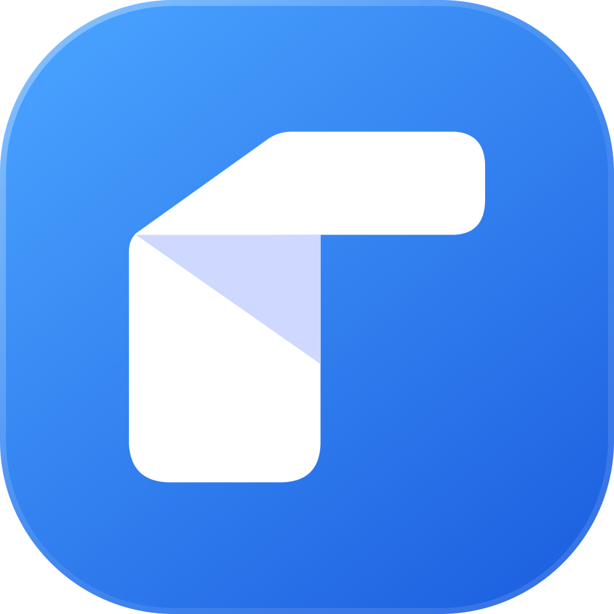
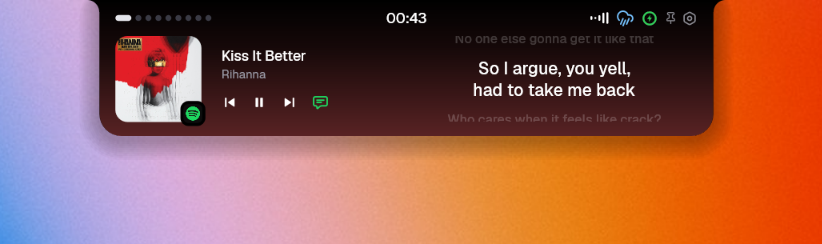

Foldline
A tiny, extensible notch for Windows.
01
Logo
TILE · 1024 · R290
DEV TILE
PRE-RELEASE
#818CF8 → #4F46E5

MARK
WHITE + FOLD
#FFF · #CFD8FF
02
Variants
fold.hibatillah.com
Foldline
Features
Install
FAQ
Meet Foldline
A tiny, extensible notch for the top of your Windows screen. Written in Rust.
Download for Windows
03
Web
Point at
the
pill.
It opens into the page you need and closes when you move away.
04
Essence
LOGO GRADIENT
#4AA3FF → #1C5FE0
ACCENT
#2563EB
ACCENT DARK
#4C9AFF
PILL
#000000
FOLD
#CFD8FF
05
Color
Aa
GEIST · 400 500 600
ABCDEFGHIJKLMNOPQRSTUVWXYZ
abcdefghijklmnopqrstuvwxyz 0123456789
0 % CPU · 23.8 MB · 116 ms
06
Type
fold.hibatillah.com
FREE · OPEN SOURCE
07
Print · concept

08
Product, in situ
82%
Charging
25 min
Focus
Rain in 30 min
Caps Lock
09
Pill messages